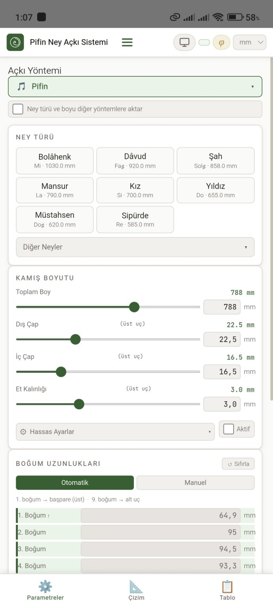
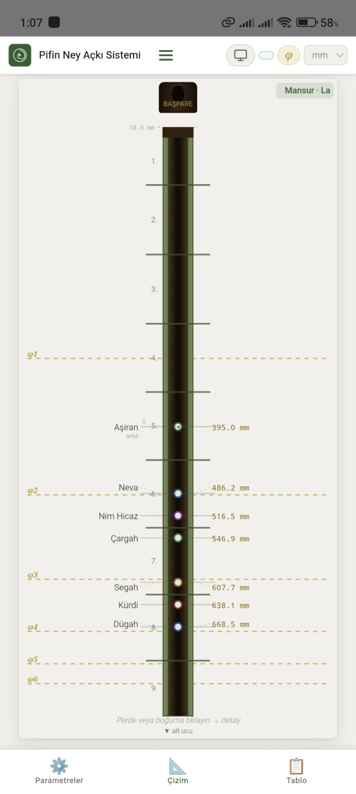
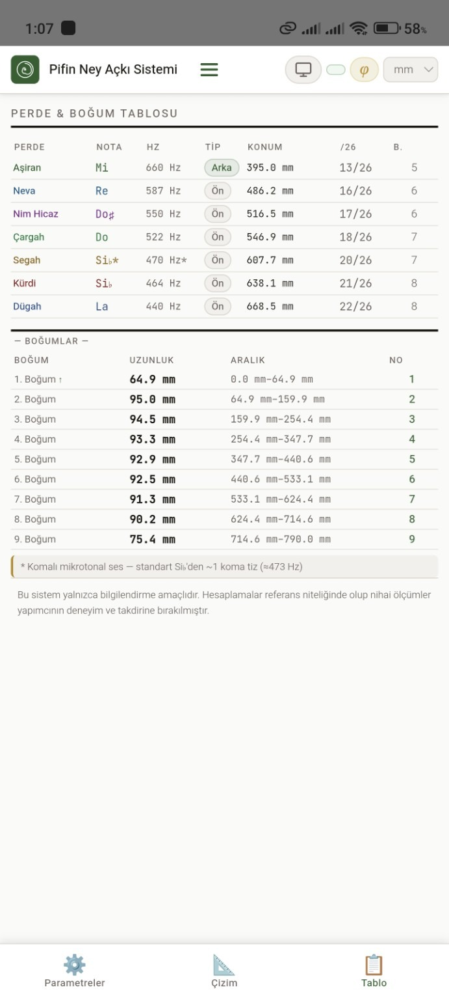
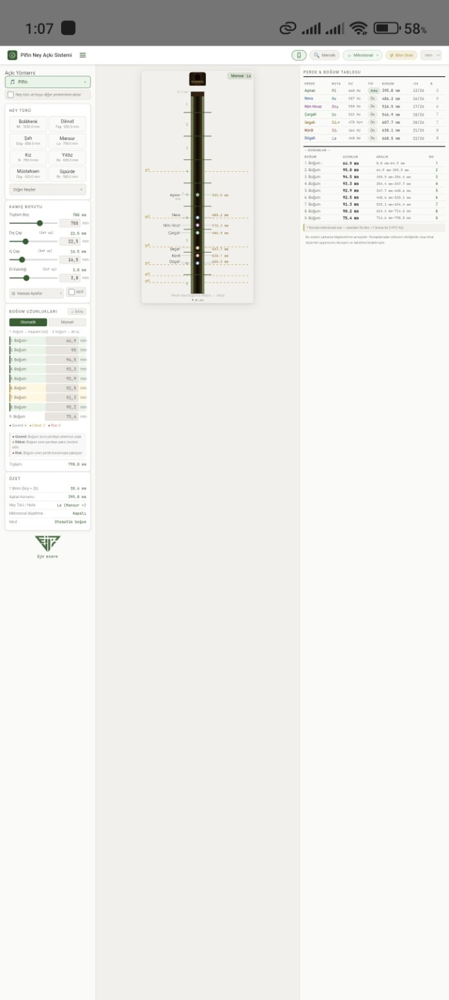
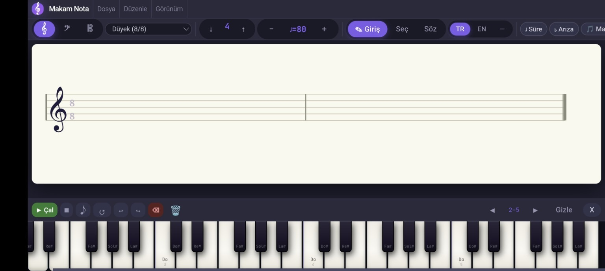
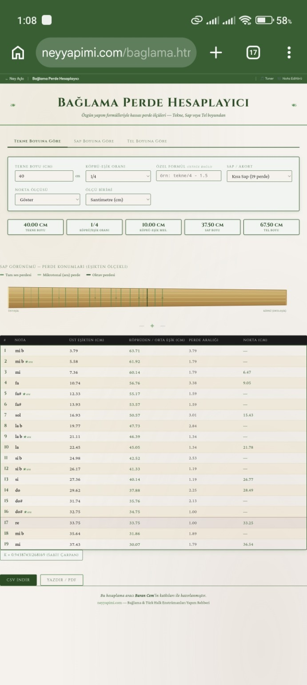

Fikirden
deneyime.
Teknolojiyi yalnızca bir araç olarak değil, hayatı kolaylaştıran, ilham veren bir yol arkadaşı olarak tasarlıyoruz. Her ürün, gerçek bir ihtiyaca özel, özgün ve bağımsız bir deneyimdir.
Sahaf
Sana ait dijital kütüphane
Kitaplarını düzenle, notlarını sakla, alıntılarını keşfet. Tamamen çevrimdışı, sana ait, özgür bir okuma alanı.
Sahaf'ı keşfet →yeni bir dünyanın
kapısıdır.”
Neyyapimi
Neyin sesinde, kadim bir yolculuk
Ney yapımının inceliklerini öğren, ölçü ve akort hesaplarını yap, ustaların deneyimlerinden faydalan.
Neyyapimi'yi keşfet →sese uzanan
yolculuk...”
PIFINAPPS
Üretimin
her aşamasına eşlik eden araçlar.
Ney ve bağlama yapımına yönelik hesaplama, ölçüm, çizim ve nota araçlarından gerçek ekran görüntüleri.

01 / NEY AÇKI SİSTEMİParametreler ve ölçüler
Ney türü, kamış boyutları, çap ve boğum uzunlukları.
Canlı sistemi aç ↗
02 / TEKNİK ÇİZİMPerde konumları
Perdelerin ney üzerindeki yerleşimi ve ölçüleri.
Canlı sistemi aç ↗
03 / HESAPLAMAPerde ve boğum tablosu
Nota, frekans, perde konumu ve boğum aralıkları.
Canlı sistemi aç ↗
04 / ÇALIŞMA ALANINey açkı çalışma alanı
Ölçüm, çizim ve hesaplamaların bir arada yönetimi.
Canlı sistemi aç ↗
05 / MÜZİKMakam Nota Editörü
Nota yazımı, ölçü düzeni ve sanal klavye.
Nota editörünü aç ↗
06 / BAĞLAMABağlama Perde Hesaplayıcısı
Tekne, sap ve tel boyuna göre perde konumları.
Hesaplayıcıyı aç ↗